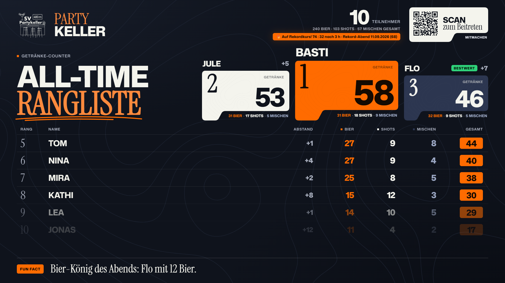
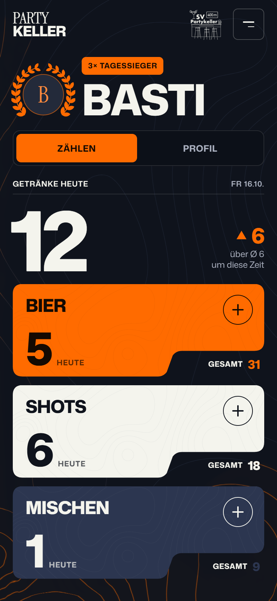
Ein Tipp aufs Getränk, fertig. Kein App-Store, läuft im Browser.
Live-Rangliste mit Podest, Timing-Tower und großen Momenten.
Ein Laptop oder Raspberry Pi im WLAN. Kein Internet, keine Cloud.
Gäste zählen ihre Getränke am eigenen Handy, der Fernseher im Keller zeigt live, wer vorne liegt. Alles läuft auf einem einzigen Rechner im eigenen WLAN – die Daten bleiben im Keller.
Laptop oder Raspberry Pi ans WLAN, Server starten, am TV die Rangliste öffnen.
Ein BefehlQR-Code auf dem TV scannen, Namen eintragen, PIN nach Wunsch. Drei kurze Willkommensseiten.
10 SekundenBier, Shot oder Mische antippen. Der TV zieht im selben Moment nach.
LiveJeder Tipp geht per WebSocket sofort an alle Handys und den TV.
Läuft in jedem Handy-Browser und lässt sich als App auf den Startbildschirm legen.
SQLite-Datenbank auf dem Rechner. Ein Neustart verliert weder Getränke noch Logins.
Alles nach Mitternacht zählt noch zum Abend davor – so wie man feiert.
Jeder zählt nur sich selbst und nur nach oben. Korrekturen macht der Admin im Getränke-Protokoll.
Jeder Abend landet im Archiv: Sieger, Verlauf, Story-Bild, Jahresrückblick.
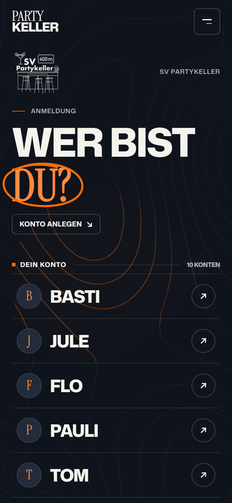
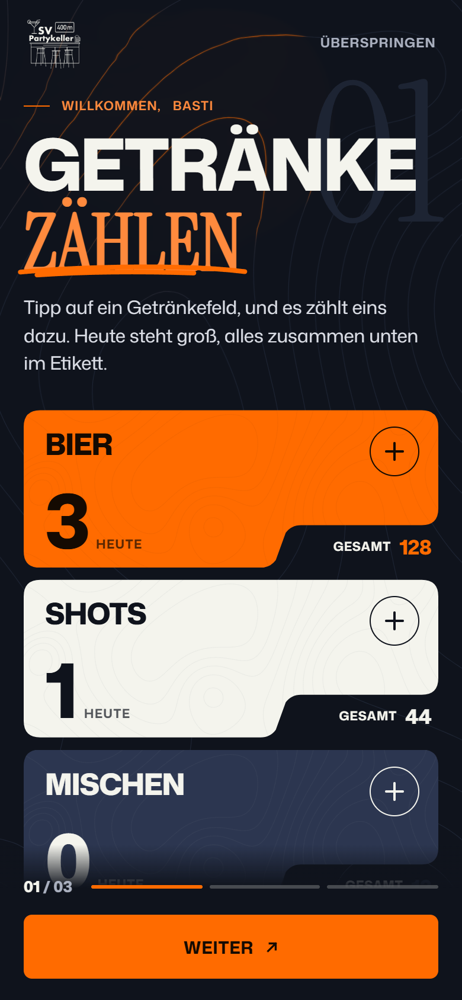
Alle Konten als Liste, das zuletzt genutzte steht oben. Neues Konto mit Name und optionaler 4-stelliger PIN.
Getränke zählen, Rangliste am TV, Profil – mit „Weiter" und „Überspringen".
Bier, Shots, Mischen. Antippen zählt +1, die alte Zahl hallt als Umriss nach. Oben „Getränke heute" mit ▲▼ zum eigenen Schnitt um diese Uhrzeit.
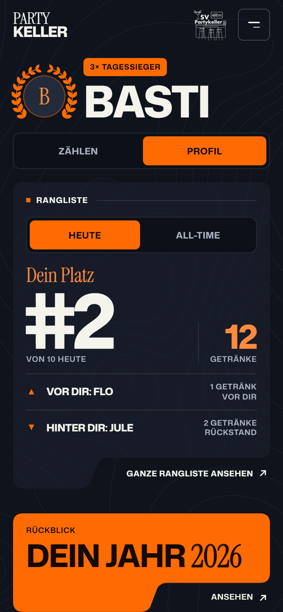
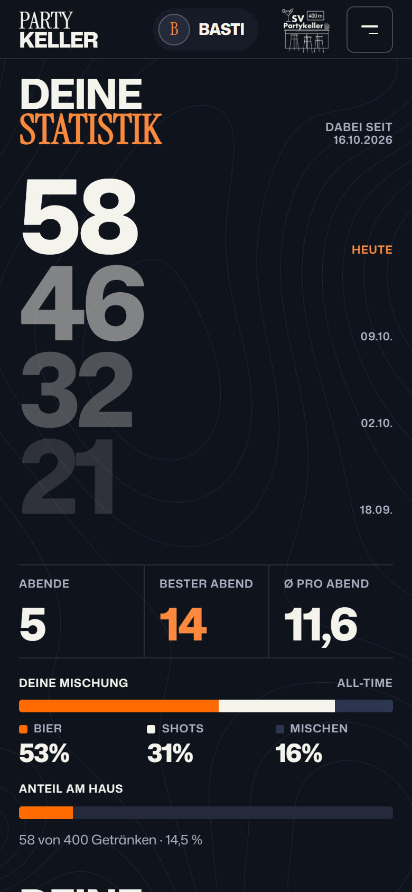
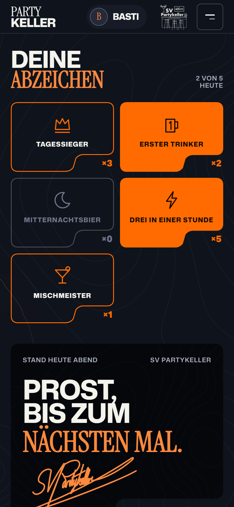
Heute oder All-Time umschaltbar, mit „Vor dir" und „Hinter dir" samt Abstand. Die ganze Rangliste öffnet sich als Blatt von unten.
All-Time-Stand mit den Ständen der letzten Abende, Abende, bester Abend, Schnitt, eigene Mischung und Anteil am Haus.
Tagessieger, Erster Trinker, Mitternachtsbier, Drei in einer Stunde, Mischmeister und Stammgast-Stufen ab 10 Abenden.
Beim Scrollen fliegen Initiale und Name stufenlos in die Kopfleiste – ein Tipp darauf, und es geht nach oben.
Sechs Story-Seiten wie in den großen Musik-Apps: Summe, Lieblingsgetränk, bester Abend mit Verlauf, stärkste Stunde, Rivale und Platz. Rechts tippen blättert, links zurück, Halten pausiert.
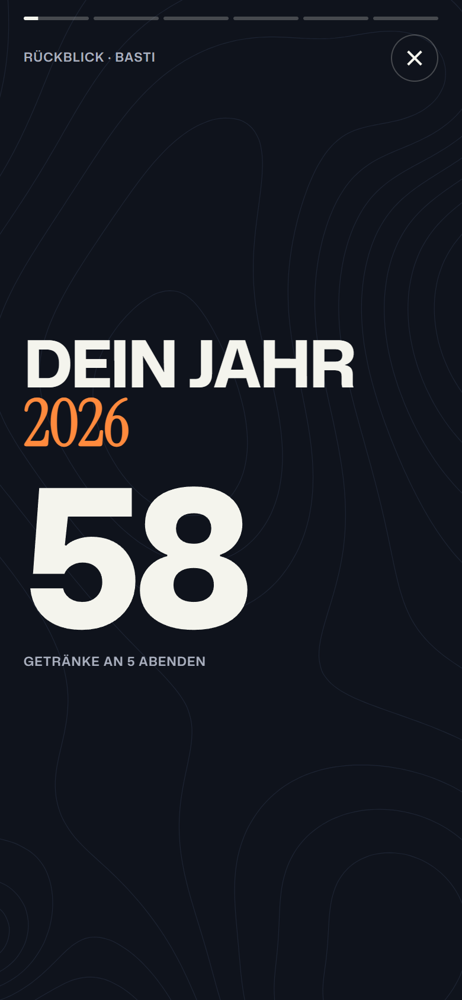
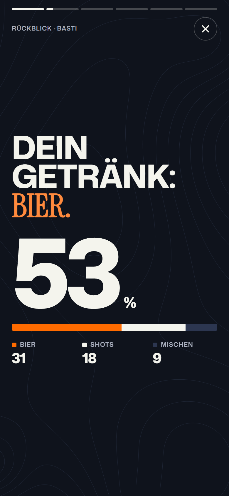
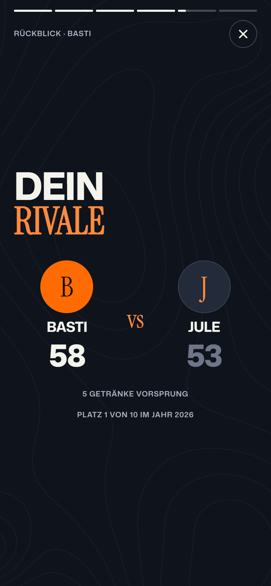
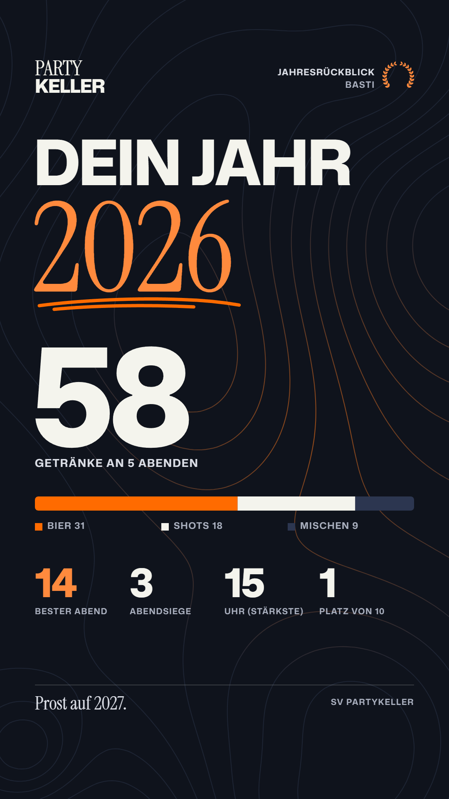
Die letzte Seite speichert den Rückblick als Story-Bild fürs Handy – direkt aus dem Browser, ohne Server und ohne Internet.
Gezählt wird das Kalenderjahr; ein Abend bis 6 Uhr früh gehört zum Vortag.
All-Time, Heute oder ein Abend aus dem Archiv – der Admin schaltet um, der TV wechselt mit einer Schiebe-Animation.
Top 3 als Kerbenkarten in Orange, Creme und Navy, ab Platz 4 eine durchlaufende Liste mit Bier, Shots, Mischen und Gesamt.
Oben rechts – scannen, Namen eintragen, mitzählen.
Abstand zum Vordermann, ▲▼ bei Platzwechseln, „Bestwert" in Grün und „Hausrekord" in Lila.
Unten laufen Rekorde, Bestleistungen, runde Marken und eigene Meldungen. 🔥 zeigt, wenn der Abend schneller läuft als der Rekordabend.
Gebaut als 1080p-Bühne, die sich auf jede Auflösung skaliert.
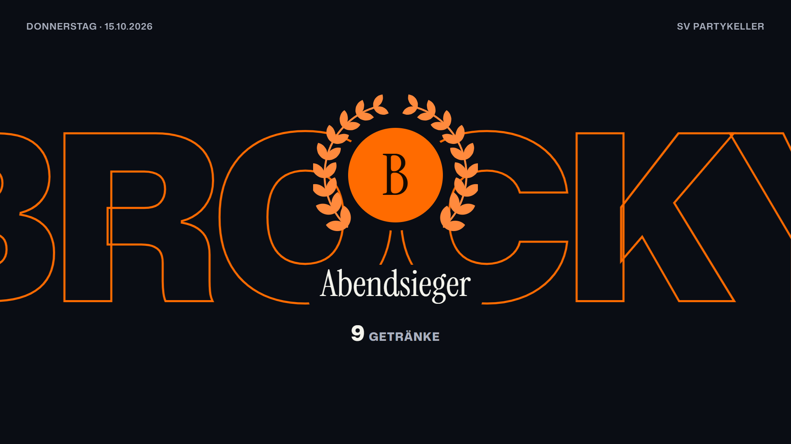
Der Name riesig als Umriss, davor die Initiale im Lorbeer – wenn jemand die Führung übernimmt oder ein Abend auf den TV gelegt wird.
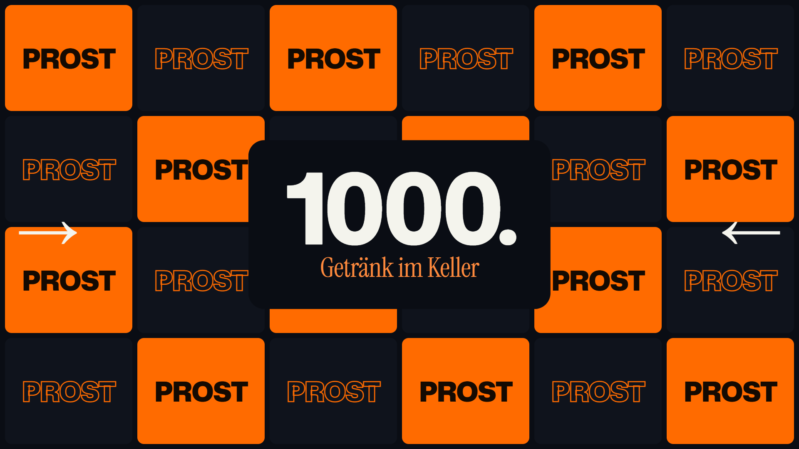
Bei runden Marken klappt ein Raster aus „PROST"-Kacheln auf: alle 500 Getränke im Haus, 100er pro Person, 50er je Sorte.
| Anlass | Zeitraum | Am Handy und TV | Moment auf dem TV |
|---|---|---|---|
| Oktoberfest | Wiesn-Zeit | Blau-weiße Wimpelkette | „O'zapft is!" beim ersten Bier |
| Halloween | 31.10. | Kürbis-Laternen an der Unterkante | Fledermaus bei Führungswechsel |
| Winter | 1.12. bis 6.1. | Schneewehe, am TV leiser Schneefall | – |
| Silvester | 31.12. ab 18 Uhr | Countdown in der letzten Stunde | Feuerwerk um Mitternacht |
| Fasching | Weiberfastnacht bis Dienstag | Luftschlangen | Konfetti bei Führungswechsel |
Alles schaltet sich nach Datum selbst ein, ist im Admin abschaltbar und bei „Bewegung reduzieren" ruhig.
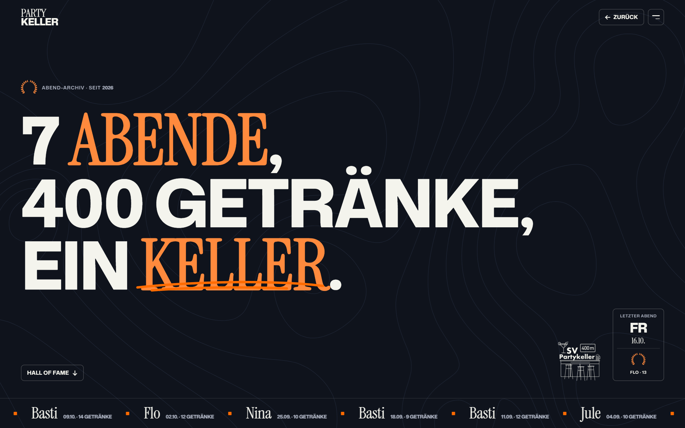
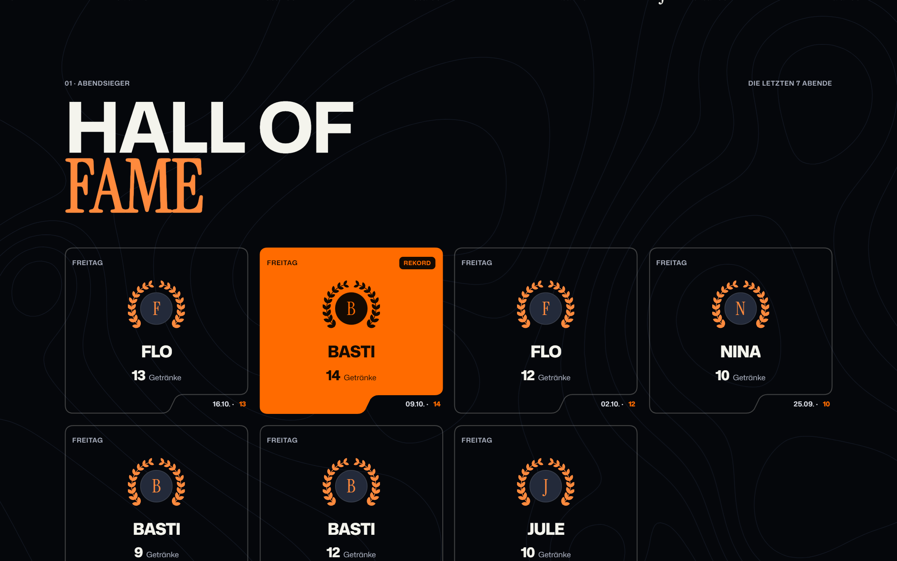
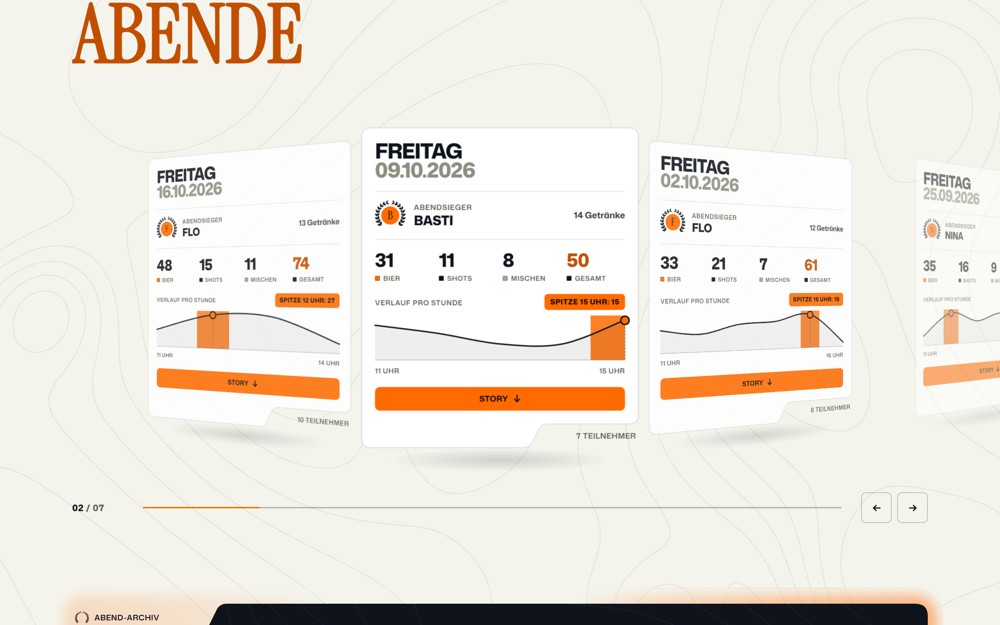
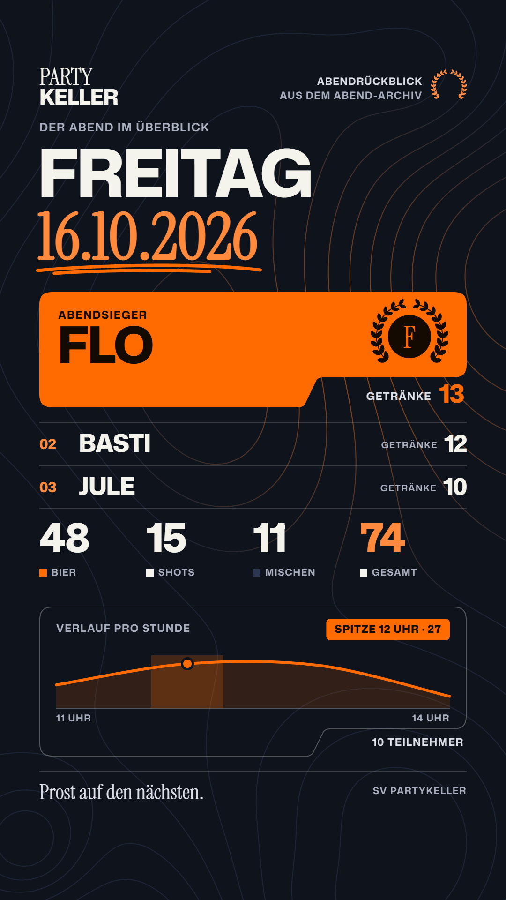
Wischen, ziehen oder Pfeile: Die Karten drehen sich wie auf einer Trommel weg.
Getränke pro Stunde mit Spitzenstunde, Bilanz und Abendsieger je Karte.
Story-Bild für alle; für den Admin CSV-Export, Abend benennen und „Auf den TV".
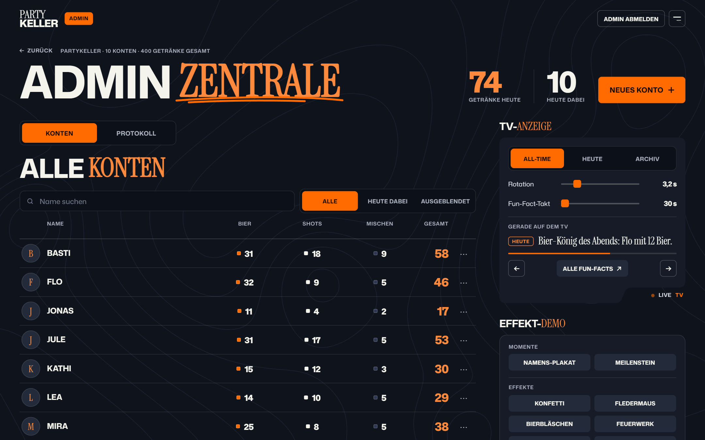
Suchen und filtern, Stände je Getränk im Blick; umbenennen, PIN setzen, ausblenden oder löschen.
Jedes Getränk eines Abends einzeln: ändern, löschen mit Rückgängig, nachtragen, Doppeltipps erkennen.
Ansicht, Archiv-Abend, Rotationstempo und Fun-Fact-Takt; alle Fun-Facts sehen und weiterschalten.
Ansagen fürs Fun-Fact-Band schreiben und bearbeiten, QR-Adresse setzen.
Komplettes Backup als Datei herunterladen und im Notfall wieder einspielen.
Admin-Passwort nur in der Konfiguration, Reset mit eigenem Lösch-Passwort, Logins mit Sperre nach Fehlversuchen.
Die Designsprache ist von der Website des Formel-1-Fahrers Lando Norris inspiriert: riesige Versalien, Serif-Akzente, Höhenlinien, Kerbenkarten und viel Bewegung – flach, ohne Fotos, ohne Effekthascherei.
Variabel in Breite und Gewicht: Versal-Headlines, Zahlen, Fließtext.
Für Akzentwörter in jeder Überschrift – wie eine Unterschrift.
Karten mit Stufe und Etikett unten rechts
Handgezeichnete Striche, die sich selbst zeichnen
Lorbeer für Sieger und Rekorde
Wörter und Zeilen gleiten aus Masken, Zahlen zählen hoch.
Ein Menü auf allen Seiten; der angetippte Punkt gleitet in die Überschrift der neuen Seite, der Rückblick wächst aus seiner Kachel.
Mit „Bewegung reduzieren" am Gerät bleibt alles still.
Laptop oder Raspberry Pi mit Node.js 20 oder neuer.
Mit Browser oder angeschlossenem Rechner, im Vollbild.
Jeder aktuelle Browser – Android oder iPhone.
In der .env stehen Admin-Passwort und ein geheimer Schlüssel für die Logins.
/partykeller/
QR-Code am TV scannen
/partykeller/tv
im Vollbild, z. B. F11
/partykeller/admin
mit dem Admin-Passwort
Als Systemdienst, erreichbar unter partykeller.local, TV im Kiosk-Modus. Anleitung liegt im Projekt unter deploy/.
Nach dem Abend im Admin ein Backup ziehen – eine Datei mit allem, auf jedem Rechner wieder einspielbar.